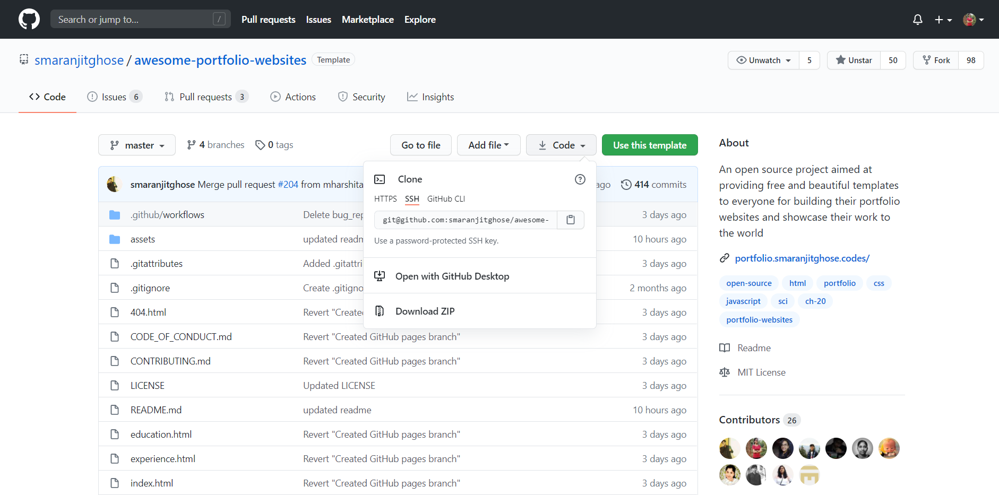
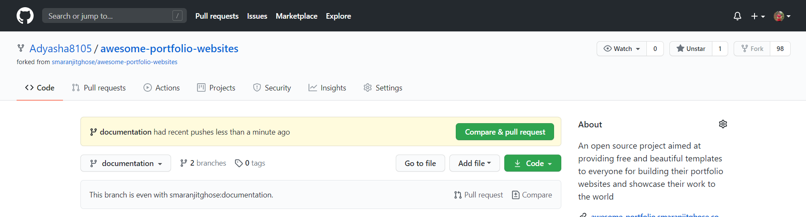
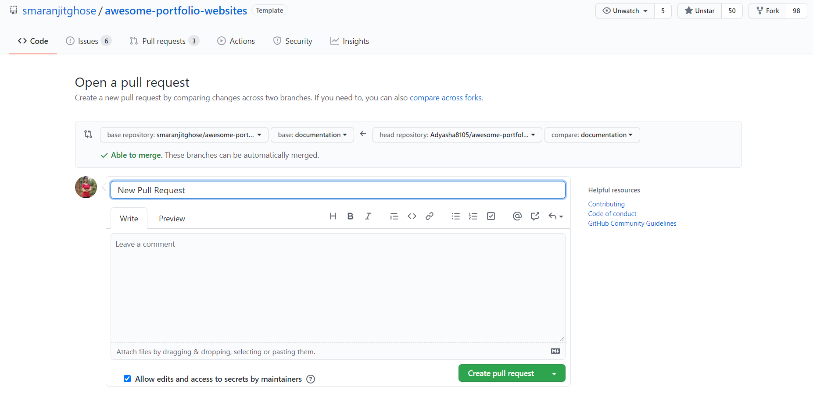

Guidelines for Contribution 👷🏻♀️
We want to make contributing to this project as easy and as transparent as possible, whether it's:
-
Reporting a bug 🐛
-
Submitting a fix 🔎
-
Proposing new features 💡
If you wish to contribute to this project, please raise an issue and wait for the project maintainers to approve it or give feedback
How to make a Pull Request? 👇
1. Fork this repository.
2. Clone your forked copy of the project.
git clone --depth 1 https://github.com/<your_user_name>/awesome-portfolio-websites.git

3. Navigate to the project directory :file_folder: .
cd awesome-portfolio-websites
4. Add a reference to the original repository.
git remote add upstream https://github.com/smaranjitghose/awesome-portfolio-websites.git
5. Check the remotes for this repository.
git remote -v
6. Always take a pull from the upstream repository to your master branch to keep it at par with the main project(updated repository).
git pull upstream master
7. Create a new branch.
git checkout -b <your_branch_name>
8. Perfom your desired changes to the code base.

9. Track your changes:heavy_check_mark: .
git add .
10. Commit your changes .
git commit -m "Relevant message"
11. Push the committed changes in your feature branch to your remote repo.
git push -u origin <your_branch_name>
12. To create a pull request, click on compare and pull requests. Please
ensure you compare your feature branch to the desired branch of the repo you are suppose to make a PR to.

13. Then add an appropriate title and description to your pull request that explains your changes and efforts done.
14. Click on Create Pull Request.

15 Voila ❗ You have made a PR to the awesome-developer-portfolio project 💥. Sit back patiently and relax while the project maintainers review your PR. Please understand at times the time can vary from a few hours to a few days